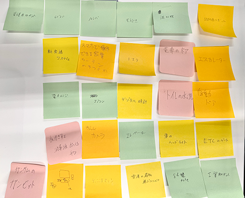
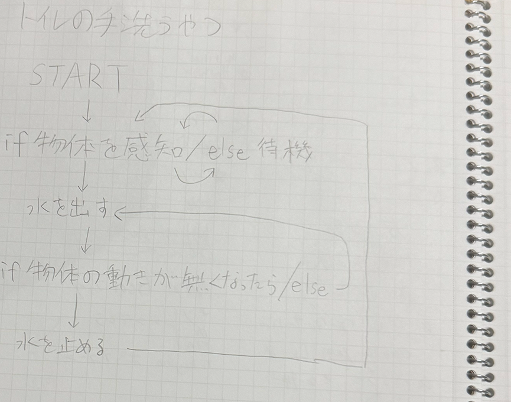
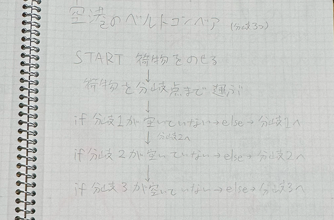
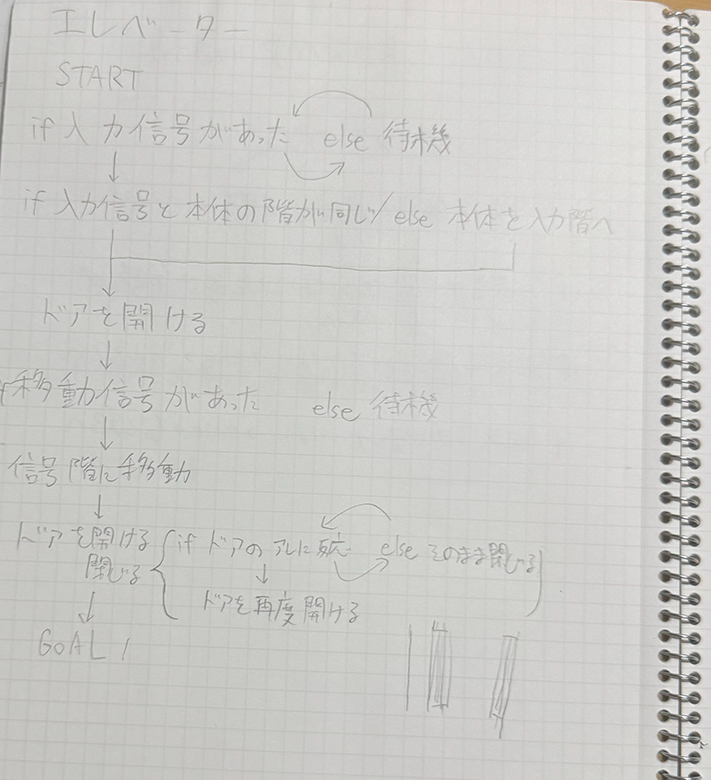
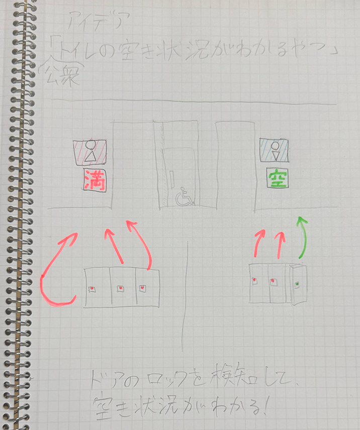

プログラムでモノを動かす
2025/4/13
【グループワークの内容】

グループワークでは、世の中にあるプログラミングで動いているモノ
を考えてみました！
数個アイデアが出てくると、それ関連のモノを連想してしまい、
視野が狭くなりがちで数を出すのが難しかったです。
【プログラミング的思考】



グループワークの中のものからいくつかピックアップして、
プログラミング的思考でそのモノの動作を言語化しました！
慣れてくると、すぐに言語化できるようになりました。
【自分で考えたアイデア】

自分で考えたモノは、「駐車場の空き状況が分かる機械」
の公衆トイレバージョンです！！
これがあれば、トイレの中に入っていちいち空いてるか確認
する作業が無くなって、すごく便利だと思いました！！